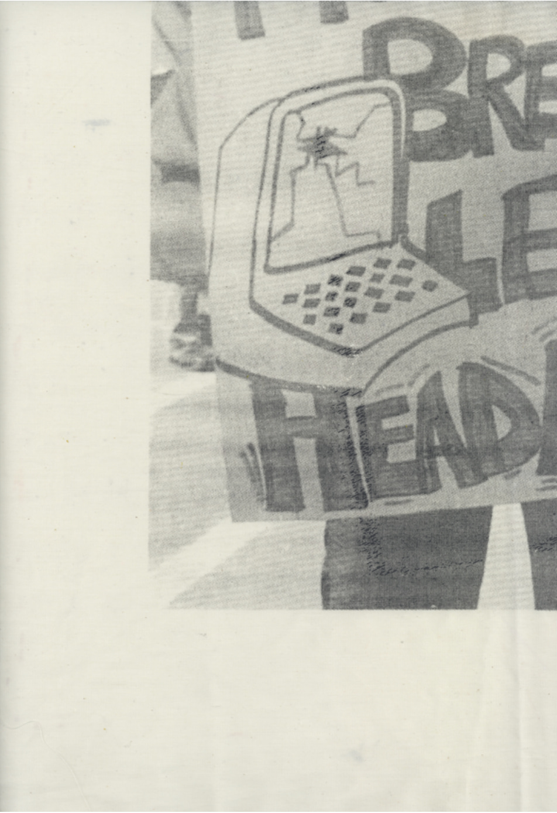

she thinks about everything at once without making a mistake.
no one has figured out how to keep her from doing this thinking
while her hands and nerves also perform every delicate complex
function of the work. this is not automatic or deadening.
try it sometime. make your hands move quickly on the keys
fast as you can, while you are thinking about:
the layers, fossils. the idea that this machine she controls
is simply layers of human workhours frozen in steel, tangled
in tiny circuits, blinking out through lights like hot, red eyes.
the noise of the machine they all sometimes wig out to, giddy,
zinging through the shut-in space, blithering atoms;
everyone’s hands paused mid-air above the keys
while Neil or Barbara solo, wrists telling every little thing,
feet blipping along, shoulders raggly.
she had always thought of money as solid, stopped.
but seeing it as moving labor, human hours, why that means
it comes back down to her hands on the keys, shoulder aching,
brain pushing words through fingers through keys, trooping
out crisp black ants on the galleys. work compressed into
instruments, slim computers, thin as mirrors, how could
numbers multiply or disappear, squeezed in sideways like that
but they could, they did, obedient and elegant, how amazing.
the woman whips out a compact, computes the cost,
her face shining back from the silver case
her fingers, sharp tacks, calling up the digits.
when she sits at the machine, rays from the cathode stream
directly into her chest. when she worked as a clerk, the rays
from the xerox angled upward, striking her under the chin.
when she waited tables the micro oven sat at stomach level.
when she typeset for Safeway, dipping her hands in processor
chemicals, her hands burned and peeled and her chest ached
from the fumes.
well we know who makes everything we use or can’t use.
as the world piles itself up on the bones of the years,
so our labor gathers.
while we sell ourselves in fractions. they don’t want us all
at once, but hour by hour, piece by piece. our hands mainly
and our backs. and chunks of our brains. and veiled expressions
on our faces, they buy. though they can’t know what actual
thoughts stand behind our eyes.
then they toss the body out on the sidewalk at noon and at five.
then they spit the body out the door at sixty-five.
each morning:
fresh thermos of coffee at hand; for the slowing down, shift
gears, unscrew the lid of the orange thermos, pour out a whiff
of home, morning paper, early light. a tangible pleasure
against the unlively words.
funny, though. this set of codes slips through my hands, a
loose grid of shadows with big gaps my own thoughts sneak
through…
Call format o five. Reports, Disc 2, quad left
return. name of town, address, zip. quad left
return. rollalong and there you are.
done with this one. start the next.
call format o five. my day so silent yet taken up with words.
floating through the currents and words of my wrists
into the screen and drifting to land, beached pollywogs.
all this language handled yet the room is so silent.
everyone absorbed in feeding words through the machines.
enter file execute.
Call file Oceana. name of town, Pacifica. name of street, Arbor.
thinking about lovemaking last night, how it’s another land.
another set of sounds, the surface of the water, submerged,
then floating free, the delicate fabric of motion and touch
knit with listening and humming and soaring.
never a clear separation of power because it is both our power
at once. hers to speak deep in her body and voice to her own
rhythms. mine to ride those rhythms out and my own,
and call them out even more. a speaking together from body
to mouth to voice.
replace file Oceana.
call file Island.
Scroll up . . . . . . . . . . . . . . . . . . . . scroll down.
What is there to justify?
the words gliding on the screen like the seal at the aquarium,
funny whiskers, old man seal, zooming by upside down
smirking at the crowd, mocking us
and his friends the dolphins, each sharp black and cream marking
streamlined as the water
huh. ugh, they want this over and over:
MAY1 MAY1 MAY 1 MAY 1 MAY 1 enough?
MAY 1 MAY 1
once I have typeset all the pages, I run the job out on tape
and clip it to the videosetter to be punched out.
then I swing out the door to get another job.
down the stairs into the cramped room where Mary and Rosie
and Agnes sit in the limb draft of one fan.
“must be 95 in here.” “yeah, and freezing in the other room.”
“got to keep the computers cool, you know.”
back up the stairs past management barricaded
behind their big desks on the way to everything.
on the way to the candy machine.
on the way to the bathroom.
on the way to lunch.
I pretend they are invisible.
I pretend they have great big elephant ears.
and because they must think we are stupid in order
to push us around, they become stupid.
knowing “something’s going on,” peering like moles.
how can they know the quirk of an eyebrow behind their back?
they suspect we hate them because they know
what they are doing to us — but we are only
stupid Blacks or crazy Puerto Ricans, or dumb blonds.
we are their allergy, their bad dream.
they need us too much, with their talk of
“carrying us” on the payroll.
we carry them, loads of heavy, dull metal,
outmoded and dusty.
they try to control us, building partitions,
and taking the faces off the phones.
they talk to us slow and loud,
HOW ARE YOU TODAY? HERE’S A CHECK FOR YOU.
As if it were a gift.
we say — even if they stretched tape
across our mouths
we could still speak to one another
with our eyebrows.
hours staring me in the face
miles of straight copy
singlespaced, shut in.
when I called my mother
her words were all
turned but not quite is that
every perfect thing isn’t sense,
I can’t, she says, can’t talk about it.
when I call her, the floor drops inches
and I am trying to be cheer.
wh-whts the matter? she says.
mother wears a dress all of blue
fabric of tiny wires and messages
veins knotted together, snagging,
and the hem gaping down
where the stitching ripped out.
don’t care if things are hard
just want a whole cloth
not all these unravelled scraps and me
a rough thread trying to gut them
together, in and out.
When I see the boss, I hold
my face clear and solemn, thinking
pig. pig. it’s true, too.
not rhetorical.
“if we stick you in the little room
with the heat on, you’ll be happy.
that’s what you wanted.”
“you’re an electronic technician,
not a typesetter. you’re lucky
to be shut out of the union.”
I know that typesetters
grow more capillaries
in our fingertips
from all that use.
here’s a test: cut my fingers
and see if I bleed more.
knowledge this power owned, not shared
owned and hoarded
to white men, lock stock dollar
skill passed down from manager
to steal, wrench it back
knowledge is something we have
this is the bitters column
around the chair, toe stubbing the floor
and I am here, legs twisted
on our time the words clarify
with all we are not taught
I will know it and use it burning
I sneak it home and copy it
the Puerto Rican janitor, the older
woman, the Black women, our heads
held over stolen not granted
in my stomach for all the access
I have to sneak
language is something
get my hands on the machine
he takes it all as his right
eating lunch for granted his whole life
get my hands on the book
he’s being taught what I am not
angry words swallowing my throat
to take to take it back
and open and ribbon out and share
The Bitters Column.
2 hours till lunch.
1 hour till lunch.
43 minutes till lunch.
13 minutes till lunch.
LUNCH.
they write you up if you’re three minutes late.
three write-ups and you’re out.
I rush back from lunch, short-cut.
through the hall to the door
locked like the face of a boss.
I tug at the door, definitely locked.
peer in through the glass, watery and dark,
see two supervisors standing 25 yards in,
talking, faces turned away.
oh good, I think, they’ll let me in.
I knock on the glass, cold to my fist.
not too loud, just enough to let them know.
they glance at me, continue talking.
I knock again, louder.
one man looks right at me, turns his back.
I am furious, let me in!
and knock again, my fist white where it is
clenched. BAM BAM BAM pause
BAM BAM BAM BAM BAM
they don’t even look up.
I knock harder and harder, the glass
shaking in its frame.
I imagine my hand smashing through the pane,
shaking their collars, bloody but triumphant.
Sleepy afternoon … halfway through typing a long page
about building specifications, lost, wandering
through strange buildings, wide deep fields at dusk,
trying to find the way home.
I reach a deserted building, a warehouse, fenced off.
people hurry to work, not stopping to talk.
a low-level murmur hovers below the surface, like the
slight draft that makes the hair on your arm lift.
birds clot on the aerials, the light out of whack.
we notice a tightness right below the hollow of the neck
gathering to a deep chestpain, slowmoving and thisk.
we notice it like smog, waking up each morning
short-breathed and headachy. the officials say nothing’s wrong,
and slippage is small, no measurable effects gather.
none of us talk out loud about this to anyone.
now though, crowds begin to pool, huddling together.
I hurry to a circle of women, where a girl dodges cops.
she is agile, darting back and forth, panting,
slippery as soap, her hair damp and glistening.
they lunge, she skips, twists, breaks from the circle
and runs. we race after her in a tumbling crowd,
she is at my ear, whispering, “money … burning … tell …
say … shout.”
we are afraid, locked in a windowless building, guarded.
the pain is still here the way summer heat insists.
I repeat the words which are about the phony soap
the guards have handed us, sickly sweet,
“will it wash it will it wash it away” and another
woman joins me, “soap fake soap,” and another
and now all of us are chanting and the ones guarding us
look uncertain, scared, as if they too wonder
and we are all chanting and shouting now,
“fake soap, will it wash it won’t it won’t it wash it away.”
half-empty streets, the calm of the warehouse district
oversize buildings like airplane hangars, expect to see
halfbuilt skeletons of planes or ships gliding the wide
rivers of the streets. nothing bustling here.
like early morning walks at home in the woods.
licorice plants flourish. the noises are big here,
not the tiny picky noises of downtown streets.
signs scrawl one wall, “US Out of El Salvador” next to a
shiny long car, must be the boss’s Cadillac, next to that,
an old chev, the cadillac of onions, paint peeling, settling
into its flat tire, looks tired, looks permanent.
ha, remember that dream now, Rose and me in a great circle
of people straggling over scraped bare dirt, no green plants
and we’re walking, and I realize this is a musicians’ union
and we are singing the Internationale in jazz rhythm.
“let each stand in their place, we shall be all.”
the buildings around us are plastered with hundreds of
red stickers that shout STRIKE STRIKE STRIKE
a woman begins to sing of all the people that work here
and the song is a list of their names and their deeds.
Line corrections
Interview with Leola S.
Typesetter: Karen B.
Born in Shreveport, Leola
independence
is important, she
one of fourteen children, her
housecleaning in San Mateo
divorced now, she lives alone in
serving dinner from 4–5 pm every
starting pay 1.53 per
h o u r
she and some co-workers
today more than ever in U.S.
h i s t o r y
posed to discrimination by sex,
race, color, religious or national
o r i g i n
more women go to work in
enter the labor
70 percent of the average wage
Black women lowest paid of
to organize the continuing fight
determined to be heardplaints against unfair policies
something worth fighting for
sector of the working class
w o m e n
Rivera’s mural, the women, rows of them
similar, yet each unique, their hands
the focus of the art
bodies solid, leaning forward, these women,
facing the voices, knowledge running through them
language the most basic of industry
to gather our food
to record exchange
to give warning and call for help
to praise courage
it flows through our hands and into metal
they think it doesn’t touch us
a typesetter changes man to person
will they catch her?
She files one job under union,
another under lagoon,
another under cash
what if you could send anything in and call it out again?
I file jobs under words I like — red, buzz, fury
search for tiger, execute
the words stream up the screen till tiger trips the halt
search for seal search for strike
search for the names of women
we could circle our words around the world
like dolphins streaking through water their radar
if the screens were really in the hands of experts: us.
think of it — our ideas whipping through the air
everything stored in an eyeflash
our whole history, ready and waiting.
at night switching off the machines one by one
each degree of quiet a growing pleasure
we swallow the silence after hours of steady noise
the last machine harrumphs off and it is so visibly quiet
switch off the fluorescent lights and it is so quietly dark
I say, goodby, see you tomorrow, and relax down the stairs
into the cavernous shop where the paper is stored
near the presses, huge cardboard cylinders of newsprint
stacked up ceiling high.
I curve toward the door in the shadows
smells sweet like a big barn
calm snowbanks these spools, or tree trunks
in the light sifting through the glazed windows
walking tired through the resting plant
past huge breathing rolls of paper
waiting to be used
some buildings never sleep
round the clock
three eight hour shifts
seven days a week
centrifugal force irons us flat
to the blank walls, speeding,
whirling, intent as astronauts,
eyes toward the clock,
hands on the keys,
shoulders pressed against the chair.
some buildings never sleep
never shut down
roaring and roaring and we shout,
WHAT DID YOU SAY? HUH? WHAT?
WHERE IS THE? WHAT DID YOU SAY?
continuous paper streams form the room
words ratatat through our brains
trains and earthquakes shudder the walls
the long whistle of wind under the door
all we know of outside
remember that fish
that lives so deep
it has grown its own light
energy glaring out the bulbs
of its eyes
remember that fish formed flat
under fathoms of water
bones streamlined as ribs of steel
precise and efficient, formed in duress,
reaching, spinning the tough wire
of its own life, and long before Edison
volting out through its own demands.
Karen Brodine, Woman Sitting at the Machine, Thinking, (Seattle: Red Letter Press, 1990), 3 – 19.

